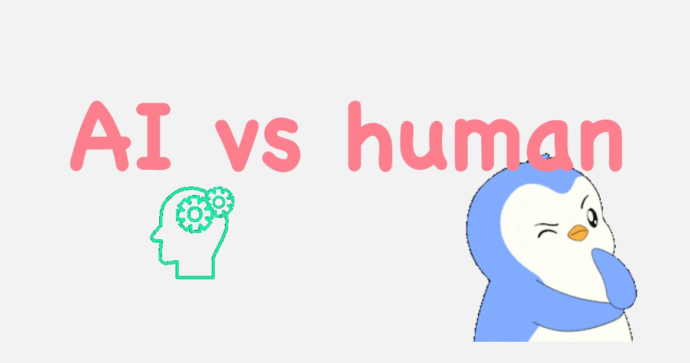

Introduction
数物情報科学科では、毎年目白祭で自由研究とその発表を行っています。
今年は物理コース1チーム、情報コース4チームが研究に取り組みました。
目白祭当日は、百305・百306（百年館低層棟3階）にてポスター発表を行いますので、ぜひお越しください。
また、このWebページ上でも各チームの研究内容を掲載しています。
枠内をクリックすると、各班ごとのページをご覧いただけます。
Contents
論理回路パズル
「めじろじっく」
Unityを利用して、論理回路を組み立てて与えられた真理値表を満たすことを目指す2Dパズルゲーム「めじろじっく」を開発しました。ゲームを通して、論理回路の仕組みや論理演算の考え方を楽しく学べる内容となっています。ホームページ上では、論理回路やゲーム紹介の閲覧に加え、実際にゲームを遊ぶこともできます！
AI vs 人間
AIと人間の発想の違いを比較するために、まずAIを用いて基本的なゲームを作成しました。その後、そのゲームに対して「面白い」と感じる要素をAIと人間がそれぞれ独自に追加し、最終的にAIでコードを生成して、両者の違いを比較・分析しました。 当日は実際にゲームをし、比較をしてみて欲しいです！

高齢者用防災アプリ
「つながりびより」
高齢者のデジタルデバイドに配慮した防災支援アプリ「つながりびより」を企画・開発しました。このアプリは、学外イベント「アプリ開発ブートキャンプ」にて、アイディアソンから実装までを一貫して行った成果です。災害時でも安心して使えるよう、高齢者にやさしいUI設計を重視し、安否登録機能、すれ違い通信、生成AIによるチャット機能の機能を実装しました。
PLATEAUで進化する
スマートルート
国土交通省が公開する3D都市データ「PLATEAU」を活用し、移動目的や状況に応じて多様なルートを提示するナビゲーションシステムを考案しました。 雨を避けるモードや、運動目的のダイエットモードなど、遊び心も加えた4つのモードで都市データの新たな活用方法を提案します。
色素増感太陽電池の作成
再生可能エネルギー技術に関心をもち、自然由来の色素を利用して光エネルギーを電気に変える色素増感太陽電池の仕組みに興味をもった。そこで、身近な食材・絵の具からアントシアニン、クロロフィル、フタロシアニン、イソインドリノンの4つの色素を抽出し、色素増感太陽電池を作成し、発電量を比較した。